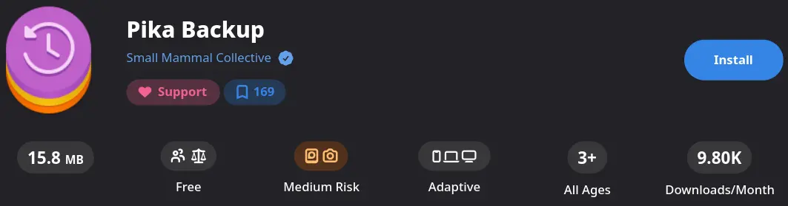
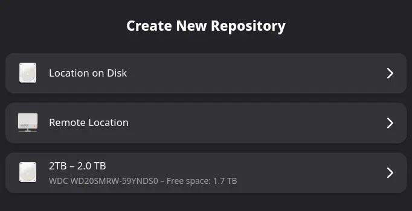
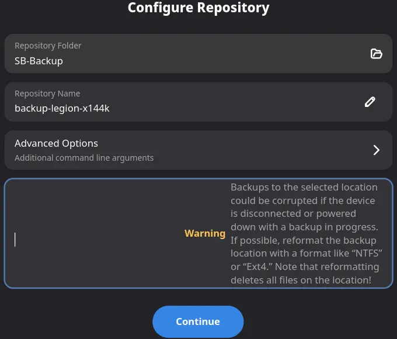
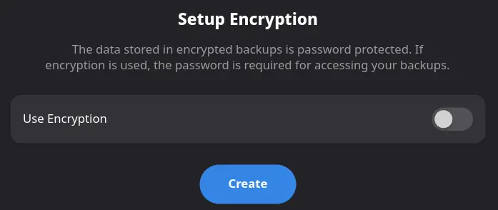
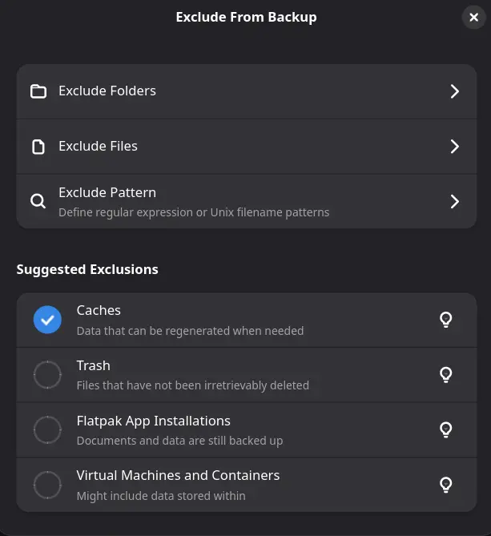
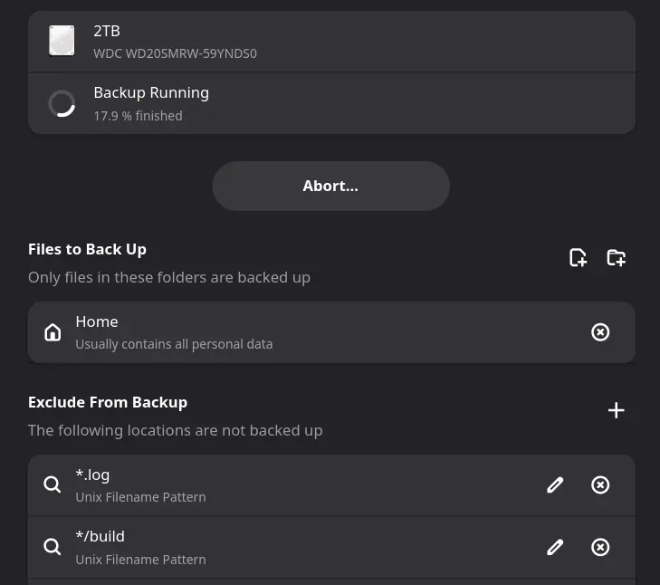
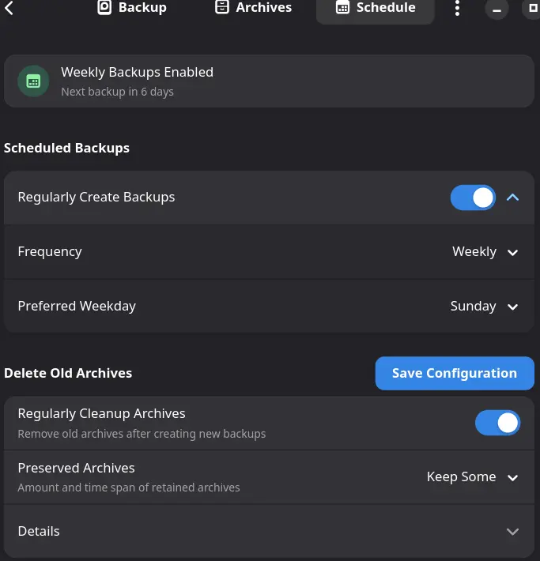
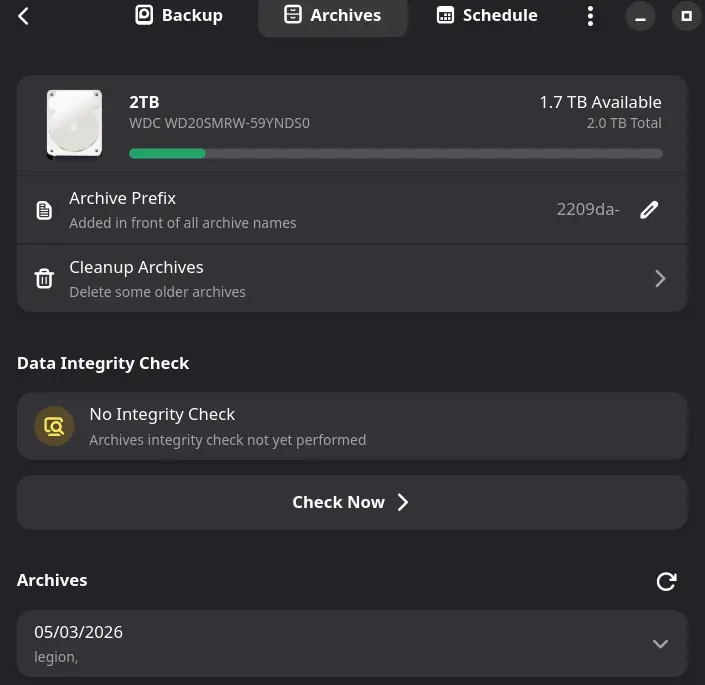

Backup and disaster recovery for secureblue OS.
This guide documents how to preserve, verify, and reconstruct a secureblue system after hardware failure, migration, or catastrophic misconfiguration. It's not about finding a new backup tool; it's about applying existing tools correctly to an atomic filesystem layout.
This guide assumes you are running secureblue (or another rpm-ostree system) and are comfortable with terminal commands. Three axioms govern atomic backup strategy. First, /usr is a read-only OSTree checkout - managed base state that is never backed up; it is rebased. Second, Btrfs deployment snapshots are local-only recovery tools; they die with the disk and do not constitute backups. Third, a backup plan is only valid after it has been tested end-to-end. If you do not understand why /usr is excluded or why snapshots are insufficient, review the rpm-ostree administrator handbook before proceeding.
Atomic systems separate managed base state (/usr) from mutable overlays (/etc, /var, layered packages, user data). A valid backup strategy must capture the deltas, not the baseline. This guide documents those deltas and their restoration order.
The strategy consists of five components working together:
This guide assumes a different mindset: the base image is disposable, the overlays are precious, and the goal is reconstruction, not cloning. You're not preserving a machine; you're preserving the deviation from a known good baseline.
/etc over months and lost track. A captured config diff shows exactly what differs from base, which is invaluable for troubleshooting.Restoration on an atomic system isn't tar xzf backup.tar -C /. It's:
/etc and selective /var state on top of the new baseThis is cleaner than cloning because it eliminates accumulated deployment cruft. Every restore is essentially a clean install plus your documented deviations.
Fedora's atomic desktops and secureblue use Btrfs for /sysroot. The rpm-ostree tooling already creates deployment snapshots automatically every time you install, update, or rebase. You can roll back to a previous deployment from the bootloader menu if a new update breaks something. This is powerful local recovery.
This guide treats snapshots as the first line of defense for daily mistakes, and off-system backups as the second line for disaster recovery. You should have both.
Pika Backup handles your personal files through a graphical interface because standard file backup is a solved problem with good GUI tools. The system state capture, however, remains command-line only. No graphical application currently understands rpm-ostree deployments, layered packages, or the three-way merge model of /etc. Until someone builds an atomic-aware backup GUI, the system-level phases require direct interaction with rpm-ostree, tar, and deployment metadata.
# Show current deployment, pending updates, and rollback history
rpm-ostree status 2>/dev/nullSave this output. It contains your current deployment hash, the image reference, and any pinned deployments you want to keep.
# List packages layered via rpm-ostree install
rpm-ostree status --booted 2>/dev/null | grep "LayeredPackages:"Alternatively, capture the full status as JSON for later parsing:
rpm-ostree status --json 2>/dev/null > ~/secureblue-backup-deployments.json# Show files in /etc that differ from the base image (canonical rpm-ostree view)
run0 /usr/bin/ostree admin config-diff 2>/dev/null | /usr/bin/head -n 50-), lock files (.LOCK), stamp files, identity files (passwd, group, machine-id, adjtime, hostname, localtime), auto-generated state (fstab, cups/subscriptions.conf*, dconf/db/distro, nvme/hostid, nvme/hostnqn, selinux/*), and ephemeral flags (.pwd.lock, .rpm-ostree-shadow-mode-fixed2.stamp).# Identify large or important persistent state in /var
run0 /usr/bin/du -sh /var/lib/* 2>/dev/null | sort -rh | head -n 20/var/lib/NetworkManager (connection profiles and keys), /var/lib/bluetooth (pairing keys), /var/lib/boltd (Thunderbolt authorization), and /var/lib/containers (Podman images) if you use containers./var/lib/rpm-ostree (deployment metadata tied to this disk), /var/lib/systemd (machine-specific random seeds and runtime tracking), auto-generated service state (fwupd, chrony, alsa, upower), ephemeral system state (AccountsService, lastlog), and metrics (rpm-ostree-countme, secureblue).
/var/lib/containers (Podman) and /var/lib/libvirt can grow to tens or hundreds of gigabytes. A tar archive of this data may exceed your backup disk capacity. Consider exporting container images with podman save or backing up VM disks individually rather than archiving the entire /var/lib directory.
/var/lib/bluetooth contains pairing keys tied to your specific Bluetooth controller MAC address. /var/lib/boltd contains Thunderbolt authorizations tied to specific devices and ports. Restoring these to different hardware is usually pointless. Only preserve them when restoring to the same machine.
run0 wrapper strips /usr/sbin and /sbin from PATH. Copy-pasting standard commands will fail with "command not found."
# Create a dedicated directory for all captured state
# Use /var/home/$USER (your actual home) because /home is a symlink on some deployments
/usr/bin/mkdir -p /var/home/$(/usr/bin/whoami)/secureblue-backup/{configs,packages,deployments,scripts}# Save full rpm-ostree status for reference
rpm-ostree status --json 2>/dev/null > /var/home/$(/usr/bin/whoami)/secureblue-backup/deployments/rpm-ostree-status.json
# Save the current image reference in plain text for quick rebasing
rpm-ostree status --booted 2>/dev/null | /usr/bin/grep -o 'ostree-[^[:space:]]*' | /usr/bin/head -n 1 > /var/home/$(/usr/bin/whoami)/secureblue-backup/deployments/current-image-ref.txt# Extract layered packages from the booted deployment via JSON (robust against formatting changes)
/usr/bin/python3 -c "import sys,json; d=json.load(sys.stdin); [print(p) for dep in d.get('deployments',[]) if dep.get('booted') for p in dep.get('requested-packages',[])]" < <(rpm-ostree status --json) > /var/home/$(/usr/bin/whoami)/secureblue-backup/packages/layered-packages.txt
# Also capture the exact rpm-ostree install command for documentation
/usr/bin/echo "rpm-ostree install $(/usr/bin/paste -sd' ' /var/home/$(/usr/bin/whoami)/secureblue-backup/packages/layered-packages.txt)" > /var/home/$(/usr/bin/whoami)/secureblue-backup/packages/reinstall-command.sh
/usr/bin/chmod +x /var/home/$(/usr/bin/whoami)/secureblue-backup/packages/reinstall-command.sh# Create a tar archive of /etc, preserving permissions and SELinux contexts
# Exclude ephemeral directories that shouldn't be preserved
run0 /usr/bin/tar czpf /var/home/$(/usr/bin/whoami)/secureblue-backup/configs/etc-backup.tar.gz --exclude=/etc/resolv.conf --exclude=/etc/localtime --exclude=/etc/machine-id --exclude=/etc/hostname --exclude=/etc/mtab --exclude=/etc/fstab /etc-C / still places files in the correct location.
/etc/fstab on rpm-ostree is typically empty or auto-generated and should not be carried across deployments. If you've installed my secureblue-hids stack, add --exclude=/etc/audit/rules.d/* to the tar command above. Audit rules in that stack are managed by its own installation procedure; restoring them from a generic /etc backup would either conflict with that managed state or miss dependencies installed by its scripts. If you've applied that stack, reinstall audit rules via the HIDS guide instead.
# Identify what in /var you actually need. This is selective, not blanket.
# Create a manifest of /var directories you want to preserve
/usr/bin/cat > /var/home/$(/usr/bin/whoami)/secureblue-backup/configs/var-manifest.txt << 'EOF'
# Uncomment the lines below for what you want to preserve:
# /var/lib/containers # Podman container images and volumes (see size warning above)
# /var/lib/libvirt # Virtual machine images
# /var/lib/flatpak # Flatpak system runtimes (not user app data)
# /var/lib/NetworkManager # Network connection profiles
# /var/log/journal # Persistent journal logs
# /var/spool # Mail and cron spools
EOFEdit the manifest to match your needs, then archive the selected paths:
# Example: backing up NetworkManager state only
run0 /usr/bin/tar czpf /var/home/$(/usr/bin/whoami)/secureblue-backup/configs/var-selective.tar.gz /var/lib/NetworkManager /var/spool/var/log/journal, you may also see "file changed as we read it" for active journal files. This is expected; journald is actively writing while tar reads. The archive will still be valid.
# Custom units in /etc/systemd/system are already captured in the /etc tar
# This step captures any user-level units in ~/.config/systemd/user
/usr/bin/mkdir -p /var/home/$(/usr/bin/whoami)/secureblue-backup/configs/user-systemd
/usr/bin/cp -r ~/.config/systemd/user/* /var/home/$(/usr/bin/whoami)/secureblue-backup/configs/user-systemd/ 2>/dev/null || truePika Backup is a graphical front-end for BorgBackup. It handles encryption, compression, scheduling, and exclusion lists through a clean GTK4 interface. This phase replaces command-line Borg with Pika for the user data portion of the backup.
Option A: GUI install (recommended for most users)
Open Bazaar, the software center that ships with secureblue. Search for "Pika Backup." Install the verified application. Secureblue enables only the flathub-verified remote by default, which filters to verified developers only. Bazaar will pull from this restricted source automatically.

Install Pika Backup from the verified Flathub source in your software center.
Option B: Command line
flatpak install flathub-verified org.gnome.World.PikaBackupUse this if you prefer the terminal or are scripting the setup. The flathub-verified remote is the default on secureblue; don't use the unqualified flathub remote.
Open Pika Backup. On the initial screen, click Setup Backup. Then click Create Repository and choose either Location on Disk, or point it to an external drive with a dedicated backup directory. The Remote Location option is beyond the scope of this guide.

Start creating a repository from the initial screen.
On the Configure Repository screen, alter the repository folder and name as needed. Then click Continue.

Set the repository folder and name on the Configure Repository screen.
On the Setup Encryption screen, decide whether you want encryption. If you enable it, set a strong password and back it up somewhere secure before proceeding. Without this password, your backup is unrecoverable. If you don't want encryption, leave the toggle off. Then click Create to finalize the repository.

Configure encryption before creating the repository.
After the repository is created, you're returned to the main screen. Click Exclude From Backup to open the exclusions dialog.
Step 1: Enable suggested exclusions. Pika provides checked suggestions for common ephemeral data. I enabled these:
.cache and .thumbnails.local/share/Trash.var/app runtime data (documents and data inside Flatpaks are still backed up).var/app inside your home directory. If you exclude .var/app, you will not back up documents, settings, or state stored inside Flatpak applications. The system-wide Flatpak runtime installations in /var/lib/flatpak are handled separately in the system state capture if you choose to back them up.
Step 2: Add custom patterns. Click Exclude Pattern and ensure the type is set to Unix Filename Pattern (the default). I added these patterns after noticing they were eating space:
*/node_modules - folders that show up when installing software dependencies*/target - build output that appears after compiling software*/dist - packaged files created by some applications*/build - temporary directories created during installation*.log - text files that grow constantly and are not worth backing upDownloads/*.iso - operating system installers I can always download againDownloads/*.img - disk images I can always download again
Enable suggested exclusions and add custom patterns.
Click Back Up Now on the main screen to begin your first backup.

First backup in progress.
Optional: Click the Schedule tab on the main screen to enable automatic daily or weekly backups. Pika uses a background service that runs even when the main window is closed. This step is optional; manual backups are sufficient if you prefer to control when they run.

Optional: enable automatic scheduled backups from the Schedule tab.
Click the Archives tab on the main screen. You should see your first archive listed with a timestamp and size. Click it to browse the contents and confirm your important directories are present. Optionally, perform a Data Integrity Check.

Verify the completed archive in the Archives view.
If you prefer not to use a GUI, the underlying Borg repository created by Pika is standard and can be manipulated from the terminal. First, install borgbackup on the host system:
rpm-ostree install borgbackup
# Reboot to activate the new deployment
systemctl rebootThen use borg commands against the repository Pika created. The repository path matches the folder you selected during setup, and archive names use timestamps:
# List archives in the Pika-created repository
borg list /run/media/$(/usr/bin/whoami)/backup-disk/YOUR-REPO-FOLDER/YOUR-REPO-NAME
# Extract a specific archive (run from your home directory)
cd ~ && borg extract /run/media/$(/usr/bin/whoami)/backup-disk/YOUR-REPO-FOLDER/YOUR-REPO-NAME::2026-05-03-12-00-00/run/media/$(/usr/bin/whoami)/backup-disk/ is a placeholder for my external drive mount point; my actual mount point is 2TB, as can be seen in Phase 2, Step 2's screenshot. Replace backup-disk with your actual backup location, whether that's an external drive or a folder on your host disk. Replace YOUR-REPO-FOLDER with your parent directory (mine was SB-Backup) and YOUR-REPO-NAME with your repository name (mine was backup-legion-x144k). Borg extract restores paths relative to the current working directory, so always run it from the directory you want to restore into (your home directory for Pika archives).
rpm-ostree uninstall borgbackup if you are certain you will rely exclusively on Pika's GUI for all backup operations and will not use the command-line procedures elsewhere in this guide.
# Check that the package list is non-empty and contains recognizable names
/usr/bin/wc -l /var/home/$(/usr/bin/whoami)/secureblue-backup/packages/layered-packages.txt
/usr/bin/head -n 10 /var/home/$(/usr/bin/whoami)/secureblue-backup/packages/layered-packages.txt# Test the tar archives
run0 /usr/bin/tar tzf /var/home/$(/usr/bin/whoami)/secureblue-backup/configs/etc-backup.tar.gz > /dev/null && /usr/bin/echo "etc-backup.tar.gz: OK"
run0 /usr/bin/tar tzf /var/home/$(/usr/bin/whoami)/secureblue-backup/configs/var-selective.tar.gz > /dev/null && /usr/bin/echo "var-selective.tar.gz: OK"/run/media/$(/usr/bin/whoami)/backup-disk/ is a placeholder; my actual mount point is 2TB, as can be seen in Phase 2, Step 2's screenshot. Replace backup-disk with your actual backup location, whether that's an external drive or a folder on your host disk. See the Phase 2 command-line alternative for full placeholder explanations. These verification steps can also be done through Pika's GUI. Click the Archives tab to browse archive contents and confirm your files are present. The command-line procedures below are provided for users who prefer terminal verification or need to script integrity checks.
# List archives in the repository
borg list /run/media/$(/usr/bin/whoami)/backup-disk/YOUR-REPO-FOLDER/YOUR-REPO-NAME | /usr/bin/head -n 20
# Run borg check on the repository
borg check /run/media/$(/usr/bin/whoami)/backup-disk/YOUR-REPO-FOLDER/YOUR-REPO-NAME# Write a restore checklist while the setup is fresh in your memory
/usr/bin/cat > /var/home/$(/usr/bin/whoami)/secureblue-backup/RESTORE-CHECKLIST.md << 'EOF'
# Restore Checklist for secureblue-backup
## 1. Rebase to secureblue
# Example only: use the exact image reference from current-image-ref.txt
rpm-ostree rebase ostree-unverified-registry:ghcr.io/secureblue/silverblue-main-hardened:latest 2>/dev/null
systemctl reboot
## 2. Reinstall layered packages
rpm-ostree install $(/usr/bin/paste -sd' ' /var/home/$(/usr/bin/whoami)/secureblue-backup/packages/layered-packages.txt)
systemctl reboot
## 3. Restore /etc overrides
run0 /usr/bin/tar xzpf /var/home/$(/usr/bin/whoami)/secureblue-backup/configs/etc-backup.tar.gz -C /
## 4. Restore /var state
run0 /usr/bin/tar xzpf /var/home/$(/usr/bin/whoami)/secureblue-backup/configs/var-selective.tar.gz -C /
## 5. Restore user data
# Run from your home directory
cd ~ && borg extract /run/media/$(/usr/bin/whoami)/backup-disk/YOUR-REPO-FOLDER/YOUR-REPO-NAME::YYYY-MM-DD-HH-MM-SS
## 6. Reboot and verify
systemctl reboot
EOFThis is the full procedure for rebuilding from bare metal or a wiped disk. It assumes you've the captured state from Phases 1-3.
# Example: rebase to secureblue (adjust image variant to match your installation)
rpm-ostree rebase ostree-unverified-registry:ghcr.io/secureblue/silverblue-main-hardened:latest 2>/dev/null
systemctl reboot/var/home/$(/usr/bin/whoami)/secureblue-backup/deployments/current-image-ref.txt if you want the same version. Using :latest gets you the newest build, which may differ from your captured state. The command above uses ostree-unverified-registry as a disaster-recovery shortcut. For routine rebases, secureblue recommends verified pulls via cosign. See the secureblue documentation for the current verified rebase procedure.
# After reboot into the new base, reinstall all layered packages
# Use the reinstall script captured in Phase 1
run0 /bin/bash /var/home/$(/usr/bin/whoami)/secureblue-backup/packages/reinstall-command.sh
# Reboot again to activate the new deployment with layered packages
systemctl reboot# Verify the archive doesn't contain hardware-specific files before extracting
run0 /usr/bin/tar tzf /var/home/$(/usr/bin/whoami)/secureblue-backup/configs/etc-backup.tar.gz | /usr/bin/grep -E "machine-id|hostname" || /usr/bin/echo "Verification passed: no hardware-specific files found"
# Restore /etc overrides. The --exclude flags are redundant with Phase 1 exclusions, but safe as belt-and-suspenders on new hardware.
run0 /usr/bin/tar xzpf /var/home/$(/usr/bin/whoami)/secureblue-backup/configs/etc-backup.tar.gz -C / --exclude=etc/machine-id --exclude=etc/hostname
# Restore /var state
run0 /usr/bin/tar xzpf /var/home/$(/usr/bin/whoami)/secureblue-backup/configs/var-selective.tar.gz -C /
# Fix SELinux contexts after restoring system state
run0 /sbin/restorecon -R /etc /var
# Restore user systemd units
/usr/bin/mkdir -p ~/.config/systemd/user
/usr/bin/cp /var/home/$(/usr/bin/whoami)/secureblue-backup/configs/user-systemd/* ~/.config/systemd/user/ 2>/dev/null || true/var/lib/bluetooth and /var/lib/boltd are hardware-specific. If you are restoring to new hardware, omit those directories from the /var archive or delete them after restoration.
/run/media/$(/usr/bin/whoami)/backup-disk/ is a placeholder for my external drive mount point; my actual mount point is 2TB, as can be seen in Phase 2, Step 2's screenshot. Replace backup-disk with your actual backup location, whether that's an external drive or a folder on your host disk. See the Phase 2 command-line alternative for full placeholder explanations. You can also restore through Pika's GUI.
# Extract from borg backup (run from your home directory)
cd ~ && borg extract /run/media/$(/usr/bin/whoami)/backup-disk/YOUR-REPO-FOLDER/YOUR-REPO-NAME::YYYY-MM-DD-HH-MM-SS# Verify deployment and layered packages
run0 /usr/bin/rpm-ostree status
# Verify /etc drift is restored (count should be non-zero and expected)
run0 /usr/bin/ostree admin config-diff | /usr/bin/wc -l
# Ensure SELinux contexts match the new deployment
run0 /sbin/restorecon -R /etc /var
# Verify services start correctly
run0 /usr/bin/systemctl --failed --no-pager
# Verify user data is present (check your own important directories)
/usr/bin/ls -la ~ | /usr/bin/head -n 10Manual backups are forgotten backups. These timers automate the capture of system state.
User timers require your user session to support background operation even when you are not logged in.
/usr/bin/loginctl enable-linger x144kx144k to your username. All remaining commands in this phase hardcode x144k; replace every instance with your username before executing them.
# Create the local bin directory if needed
/usr/bin/mkdir -p /var/home/x144k/.local/bin
/usr/bin/cat > /var/home/x144k/.local/bin/secureblue-state-capture << 'EOF'
#!/bin/bash
set -uo pipefail
# Change x144k to your actual username
BACKUP_BASE="/var/home/x144k/secureblue-backup"
/usr/bin/mkdir -p "${BACKUP_BASE}/deployments" "${BACKUP_BASE}/packages" "${BACKUP_BASE}/system-borg"
# Initialize borg repo for system state if it doesn't exist (user-owned)
if [ ! -f "${BACKUP_BASE}/system-borg/config" ]; then
/usr/bin/borg init --encryption=none "${BACKUP_BASE}/system-borg"
fi
# Capture current deployment state
rpm-ostree status --json > "${BACKUP_BASE}/deployments/rpm-ostree-status.json" || /usr/bin/echo "Warning: failed to capture deployment status" >&2
rpm-ostree status | /usr/bin/grep -o 'ostree-[^[:space:]]*' | /usr/bin/head -n 1 > "${BACKUP_BASE}/deployments/current-image-ref.txt" || /usr/bin/echo "Warning: failed to capture image reference" >&2
# Capture layered packages (robust JSON parsing)
/usr/bin/python3 -c "import sys,json; d=json.load(sys.stdin); [print(p) for dep in d.get('deployments',[]) if dep.get('booted') for p in dep.get('requested-packages',[])]" < <(rpm-ostree status --json) > "${BACKUP_BASE}/packages/layered-packages.txt" || /usr/bin/echo "Warning: failed to capture layered packages" >&2
/usr/bin/echo "rpm-ostree install $(/usr/bin/paste -sd' ' "${BACKUP_BASE}/packages/layered-packages.txt")" > "${BACKUP_BASE}/packages/reinstall-command.sh"
/usr/bin/chmod +x "${BACKUP_BASE}/packages/reinstall-command.sh"
# Capture /etc via borg (run as root, then restore ownership so user can manage the repo)
run0 /usr/bin/borg create --compression lz4 "${BACKUP_BASE}/system-borg::etc-$(/bin/date +%Y%m%d-%H%M%S)" /etc || /usr/bin/echo "Warning: failed to capture /etc" >&2
run0 /usr/bin/chown -R x144k:x144k "${BACKUP_BASE}/system-borg" 2>/dev/null || true
/usr/bin/echo "State captured at $(/bin/date)"
EOF
/usr/bin/chmod +x /var/home/x144k/.local/bin/secureblue-state-capture# Create user systemd directory
/usr/bin/mkdir -p /var/home/x144k/.config/systemd/user
/usr/bin/cat > /var/home/x144k/.config/systemd/user/secureblue-state-capture.service << 'EOF'
[Unit]
Description=Capture secureblue system state
[Service]
Type=oneshot
ExecStart=/var/home/x144k/.local/bin/secureblue-state-capture
StandardOutput=journal
EOF
/usr/bin/cat > /var/home/x144k/.config/systemd/user/secureblue-state-capture.timer << 'EOF'
[Unit]
Description=Weekly secureblue state capture
[Timer]
OnCalendar=weekly
Persistent=true
[Install]
WantedBy=timers.target
EOF
/usr/bin/systemctl --user daemon-reload
/usr/bin/systemctl --user enable --now secureblue-state-capture.timerx144k. Change all instances of x144k in the script and service files to your username before running these commands. User timers run under your session and do not require root privileges for scheduling, though the script internally uses run0 to back up /etc. To prune old borg archives and prevent unbounded growth, run borg prune --keep-weekly=4 --keep-monthly=3 "${BACKUP_BASE}/system-borg" periodically.
These are issues you may encounter while implementing this strategy. The fix patterns should transfer even if your exact error differs.
rpm-ostree rebase and reboot, some files are missing or reverted.ostree admin config-diff to inspect what the system considers drift.rpm-ostree install fails with "package not found" or dependency conflicts.layered-packages.txt after each successful rebuild.restorecon -R /var after restoring /var state.ls -la /run/media/$USER. If needed, relabel: restorecon -R /run/media/$USER/backup-disk. For borg specifically, ensure the repository directory is readable by your user.I built this guide because I needed it myself. Once I had layered packages, modified configs, and data scattered across /home, /etc, and /var, I realized I had no clear record of what I had changed or how to rebuild it. Snapshots help with daily mistakes, but they do not survive a dead disk. I wanted something I could hand to my future self after a hardware failure and say: follow this, and you'll be back to normal.
If you followed along, you now have the same thing: Pika handling your files, a captured package list, archived system configs, and a written restore procedure while it's still fresh in your mind. That last part matters more than the tools. A backup plan you've never tested is a wish, not a plan. A restore procedure you wrote down while calm is a lifeline when you are not.
Best of luck. Hope you never need it.